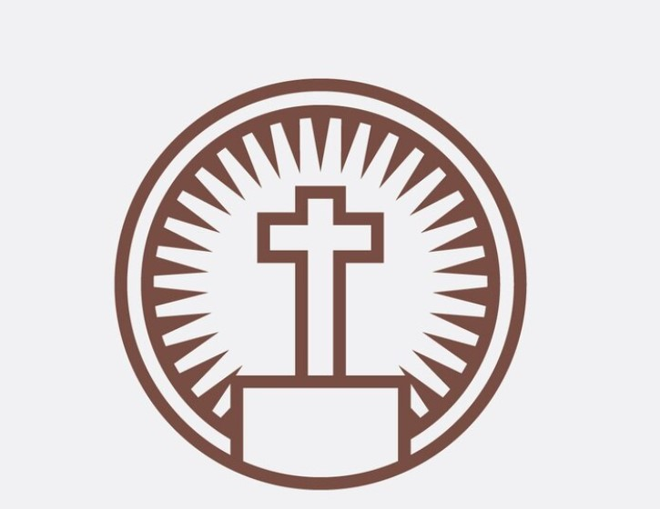
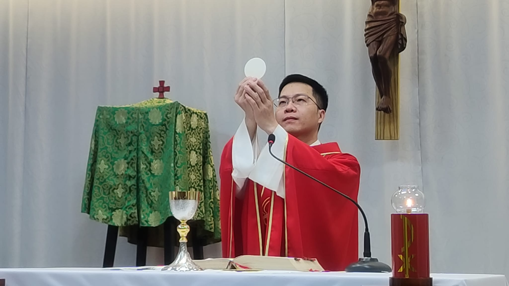

台中東海善牧天主堂
首頁
最新消息
教堂緣起
認識教會
整建募款
共融代禱
活動花絮
耶穌是善牧，歡迎來到善牧堂

關於善牧堂
善牧堂早期是以中區大專同學會活動為主的教堂，自1955年起歷經耶穌會雷煥章神父、宣國榮神父、馮允文神父等人，如今本堂神父為陳順德神父，期待來訪善牧堂的教友們，個個都成為主所愛用的器皿、教會的盤石。我們祈求天主聖神不斷的護佑，如同善牧帶領羊群，使他們能順行主的道路，遠離世俗的誘惑，學會奉獻和犧牲，緊緊跟隨基督的足跡，成為世上的鹽，世界的光，讓別人能一眼就認出屬於基督而讚美感謝天主！
彌撒時間
中文彌撒 平日彌撒 週一、三、四、五 19:30-20:30 主日彌撒 週日 09:00-11:00 (08:30讀玫瑰經) 主禮神父:陳德順
越南彌撒 đại chúng việt nam Thánh Lễ ngày thường Thứ Tư 19:30-20:30 ngày chủ nhật Chủ nhật 16:00-17:00
主日學
週日 11:30-12:30
善牧堂主日學從91年9月8日開始，第一批孩子中已有優秀的高中青年，我們本著傳承的想法會以母雞帶小雞的模式，邀請較大的哥哥、姐姐們學習帶領的工作，讓小朋友可以像在大家庭裡兄弟姊妹相親相愛彼此學習，期望孩子們與基督終身為友的同時，也為少子化家庭兒女多了可相依的兄弟姊妹。孩子需要陪伴，因此歡迎有愛心的叔叔、伯伯、阿姨、媽媽們加入陪伴團隊。